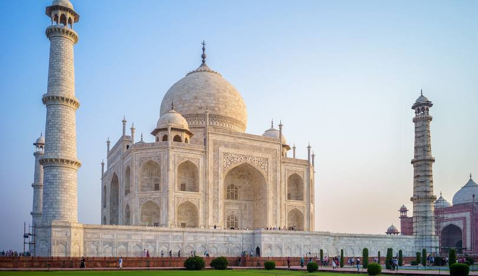

Taj Mahal

A timeless symbol of love and architectural brilliance, the Taj Mahal stands as one of the most iconic landmarks in the world.
Situated in Agra, India, this breathtaking mausoleum is recognized as one of the New Seven Wonders of the World.
It represents the artistic and cultural achievements of the Mughal Empire, drawing millions of visitors each year.
The History of the Taj Mahal
The Taj Mahal was commissioned in 1632 by the Mughal Emperor Shah Jahan in memory of his beloved wife,
Mumtaz Mahal. Construction of the mausoleum took over 20 years and involved the labor of more than 20,000 artisans,
including architects, masons, and craftsmen from across the empire and beyond. Completed in 1653, the Taj Mahal is a
masterpiece that embodies the emperor's devotion and the grandeur of Mughal architecture.
An Architectural and Artistic Marvel
The Taj Mahal is a harmonious blend of Persian, Islamic, and Indian architectural styles. Built using pristine white marble
sourced from Rajasthan, its intricate carvings and inlaid precious stones create an unparalleled sense of beauty. The symmetrical layout of the
complex, including the grand gateway, reflecting pools, and lush gardens, adds to its ethereal charm. The central dome, rising to a height of
73 meters (240 feet), is flanked by four elegant minarets, showcasing the symmetry and grandeur of the design.
A Symbol of Love and Devotion
The Taj Mahal is more than an architectural wonder; it is a testament to undying love. Built as a mausoleum for Mumtaz Mahal,
it reflects Shah Jahan’s deep affection and his desire to immortalize their bond. For many, the Taj Mahal serves as a universal symbol
of love, inspiring awe and admiration across generations and cultures.
The Construction Process
The construction of the Taj Mahal was a monumental undertaking. Artisans used advanced techniques to achieve its intricate details,
including inlay work with semi-precious stones like jade, lapis lazuli, and turquoise. The white marble was transported by an elaborate
network of carts and boats, highlighting the dedication and ingenuity of its builders. The entire complex is aligned with precision,
emphasizing symmetry and balance in every aspect of its design.
Preservation and Modern-Day Efforts
Over the centuries, the Taj Mahal has faced threats from pollution, weathering, and the passage of time. Designated as a
UNESCO World Heritage Site in 1983, it has been the focus of preservation and restoration efforts to safeguard its beauty.
Measures to reduce air pollution and maintain the integrity of the structure ensure that the Taj Mahal continues to inspire awe for future generations.
Visiting the Taj Mahal Today
Visiting the Taj Mahal is an unforgettable experience. Visitors can marvel at its beauty during sunrise or sunset,
when the marble reflects the changing hues of the sky. Exploring the intricately designed mausoleum, the surrounding gardens, and the Yamuna River
provides a deeper appreciation of its grandeur. The Taj Mahal is a must-visit destination, offering a profound connection to history, culture, and timeless love.
The Legacy of the Taj Mahal
The Taj Mahal is not just a monument; it is a timeless symbol of love, artistry, and cultural heritage.
Its enduring beauty and historical significance continue to captivate people from around the globe, making it a cherished wonder of the ancient and modern world.